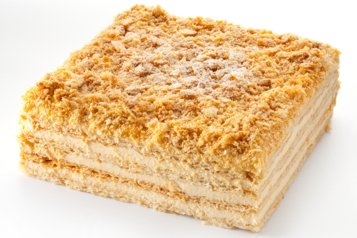

<!DOCTYPE html>
<html lang="en">
<head>
	<meta charset="UTF-8">
	<title>mySite2</title>
	<link rel="stylesheet" href="style.css">
	<script src="https://ajax.googleapis.com/ajax/libs/jquery/3.2.1/jquery.min.js"></script>
	<script src='script.js ' defer></script>
	<script src="http://code.jquery.com/jquery-1.10.2.js"></script>
	<script src="http://code.jquery.com/ui/1.11.4/jquery-ui.js"></script>

</head>
<body>
	
</body>
</html>
<header>	
<div class="menu">
	<div id='gamburger'>
		<button class="toggle-hamburger toggle-hamburger__animx">
		<span>menu toggle</span>
	</div>
	<div class='line'>
		<a href="index.html" class='displayNone'>Домашня</a>
		<a href="shop.html" class='displayNone'>Вироби</a>
		<a href="contact.html" class='displayNone'>Контакти</a>
		<a href="recept.html" class='displayNone'>Рецепти</a>
	</div>
</div>
<div id='header_content'>
	<div class="line1"></div>
	<div id='recept'>
		<div><h1>ТОРТ «НАПОЛЕОН»</h1></div>
		<div id='imgTort'>
			
		</div>
		<div><h1 id='description'>ОПИС СТРАВИ</h1></div>
		<div><p id='receptPharagraph'>Якщо ви запитаєте в себе, чого б хотілося на десерт, що вам перше прийде у голову? Звісно ж, торт! Навіть ті, хто не вважає себе шанувальником мучного та солодкого, куштували торти різних видів. Один з найбільш знаменитих своєю м’якістю та ніжністю смаку – це торт «Наполеон». Напевно, не дарма його назвали іменем великого генерала – загарбника мільйонів. Торт «Наполеон» класичний підкорив мільйони любителів солодкого, і ця перемога цілком та повністю заслужена.</p></div>
		<div id='table'>
			<table border="1">
		    <caption>ІНГРЕДІЄНТИ</caption>
		    <tr>
		    	<th>Назва</th>
		    	<th>Кількість</th>
		    </tr>
		    	<tr><td>Борошно пшеничне</td><td>1,8 кг</td></tr>
		    	<tr><td>Вода</td><td>200мл</td></tr>
		    	<tr><td>Сіль</td><td>½ чайної ложки</td></tr>
		    	<tr><td>Молоко 2,6% ТМ «Рудь»</td><td>3 л</td></tr>
		    	<tr><td>Цукор</td><td>500 г</td></tr>
		    	<tr><td>Яйце куряче</td><td>5шт.</td></tr>
		    	<tr><td>Ванілін</td><td>10г</td></tr>
			</table>
		</div>
		<h1>ПРИГОТУВАННЯ</h1>
		<p>Як і будь-який інший торт, «Наполеон» починається з тіста. Для правильного приготування коржів необхідно додержуватися особливої послідовності. 1,5 кг муки висипати на робочу поверхню, а на борошно викласти порізане на кусочки масло в кількості 500 г. Таким чином, масло починає змішуватися з борошном, формуючи основу для тіста. Отриману суміш викласти гіркою.
		Воду кімнатної температури необхідно змішати з сіллю до повного розчинення кристалів, а наступний крок – повільно й поступово вилити цю воду в центр гірки з борошна і масла, після чого ретельно перемішати і замісити тісто з однорідною структурою, не допускаючи виникнення грудочок.
		Усе тісто, що вийшло, треба розділити на 9 шматків, котрі згодом сформують коржі, після чого розкатати коржі, посипані борошном, і помістити в духовку на випікання при 180 градусах.
		Наступний крок – приготування крему. Для цього необхідно 2,5 літра молока поставити на вогонь. Доки воно доходить до кипіння, слід ретельно збити яйця і цукор до утворення піни. Решту борошна треба додати у збиті яйця, і отриману суміш поступово ввести в молоко, після цього добитися повної однорідності маси, і як результат – правильно звареного крему. Усю масу необхідно довести до кипіння й вимкнути, як тільки з’являться перші бульбашки. У гарячим крем додати 100 г масла і ванілін.
		По завершенні приготування крему помістіть перший корж на окреме блюдо і рясно змастіть його кремом. Зверху накрийте його новим коржем и знов змастіть його кремом. Повторюйте процедуру до повної зборки торта, не жаліючи крему, бо у підсумку його повинно вийти достатньо. Крім самих коржів, добре змащуйте також і боки, бо мета – добитися доброго просочування коржів. Зверху торт можна прикрасити крихтами з одного з коржів, печивом чи ягодами.</p>
	</div>
</div>

</header>
<footer>
	<div class="social">
			<a href="https://mail.google.com/"></a>
			
			<a href="https://www.facebook.com/"></a>
			
			<a href="https://plus.google.com"></a>
			
			<a href="https://www.instagram.com/"></a>
			
			<a href="https://ru.pinterest.com/"></a>
		</div>
		<p>andriisvirskyi@gmail.com</p>
</footer>	